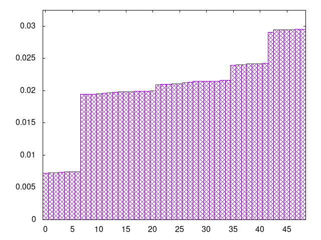
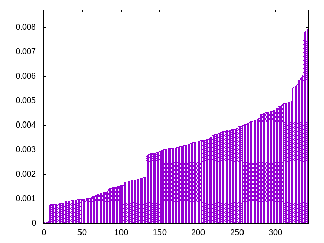
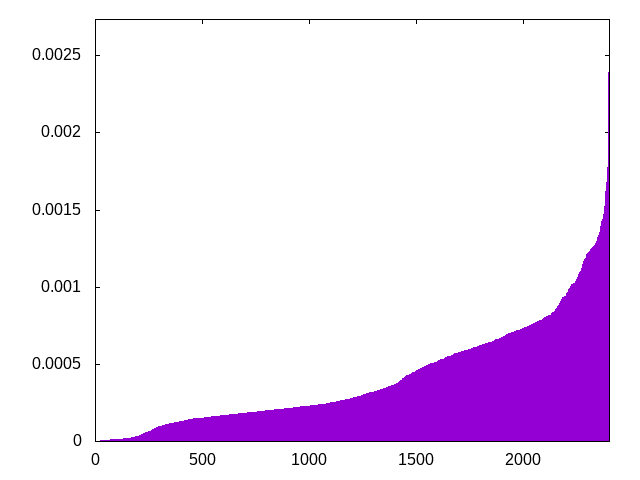

pieces are drawn from a bag (the window) which is refilled by a second bag
window=4, fixed second bag
ljistiojzoszijltlzsiljtoozjttssoijltslzozltiszojitjsozliitlsjojzsoltjliziozsljtstijiltoojzslzotsjzlsotziltisjzijolstjiizltosjzostzloijsolziitjltjozlsitzsiljszjootltzsjoitizljislozjtliososizlsttjiljzszoitljoostlzjszjtlioizjosttsojiilstlzjlitozoiszljztjlitosszljsitojltzosoiltiszjojizslziottoszjillsjztltoiszjjitszjliosotjloliozzjitlsostlzjiojtilztsozltsiojilssjotzjtiszoijllotzjizlstosliztsjzjliotsjzlisojtlizstozijlotszjtoisjzoisltljzolitojstilzjzsliostzoijtzlojstilziljotssiztolsjozisjojzitltojilslszozltsiojtltsoizijjtszjoilloszzjtstlizijltsozlioojjitlstzjzlitszoosjtoljsitlozjiztlszisjitlojoiszlzsjottlsziljtiszojlstzoijoltsiiljszojtiolstzoljtiozijtzlzsjlistsjioosozzillsojztjtsloizlttjszjotilizsjiotljsziltojsoizolsjlttizositlozjszltosijjtisolilztzsjoltsozjiijtlzjoiszlozijttozljilsosjslistzzoiltsojiljtszjtitlszzjooiszjlotislzjitslzjototsoijltlzzoiljissjoitztzoslijsozjitsltzjltiosoljtszzloitslzojitjiszllotsojjiztlioiztsolsjlzjsijztolszjiiolttozjssltjizisltjoolizstozltjoiijltzsjozissljtzlioozj
bagginess: 0.0753
bagginess6: 0.5897
distribution1_maxgap: 1.000000000001e-06
distribution2_maxgap: 0.011923011923011921
distribution3_maxgap: 0.001864003728007456
distribution4_maxgap: 0.0005590016770050312
diversity: 5.6
entropy: 10.786
evenness_diff: 8.682
evenness_same: 4.994
maxdrought: 22.6
maxflood: 4
peakdrought: 6.0
repchance: 0.0515
seq4_coverage: 0.9975
seq4_follow: 7.640
distribution2_graph:

distribution3_graph:

distribution4_graph:

similarity: (lower is more similar)
| 0.132 | deepbag_fixed7 |
| 0.219 | shirts_g1w7 |
| 0.231 | wet2 |
| 0.257 | shirts_smooth_c10 |
| 0.273 | wet3_size12 |
| 0.276 | bag |
| 0.289 | shift3_5 |
| 0.291 | tgm_pure |
| 0.298 | deepbag_window4 |
| 0.305 | shirts_g3w7 |
| 0.306 | tgm |
| 0.312 | bag_pure |
| 0.314 | weight2 |
| 0.316 | weight_lin_pure |
| 0.319 | balanced5 |
| 0.338 | seamless_deep_pure |
| 0.338 | weight |
| 0.348 | shirts_smooth_c12 |
| 0.380 | weight_exp |
| 0.393 | shirts_smooth_c8 |
| 0.398 | tgm_tap |
| 0.420 | bag2 |
| 0.423 | tgm_tap_pure |
| 0.423 | shift7 |
| 0.426 | shirts_g1w3 |
| 0.434 | seamless_bag_pure |
| 0.440 | seamless_bag2_pure |
| 0.444 | shirts_smooth_c14 |
| 0.444 | weight_exp_pure |
| 0.479 | ti |
| 0.517 | deepbag_fixed10 |
| 0.537 | balanced7 |
| 0.562 | seamless_bag3_pure |
| 0.642 | deepbag_window7 |
| 0.642 | balanced_long_add_pure |
| 0.646 | shift10_5 |
| 0.662 | deepbag_window10 |
| 0.674 | wet_pure |
| 0.687 | bag3 |
| 0.700 | wet |
| 0.704 | nes_pure |
| 0.720 | nes |
| 0.724 | balanced9 |
| 0.737 | shift14 |
| 0.774 | shift21 |
| 0.775 | wet3 |
| 0.786 | bag4 |
| 0.810 | balanced_long_mul_pure |
| 0.999 | fullrandom |
| 1.004 | wet2_size100 |
| 1.008 | shirts |
| 1.109 | fullrandom_pure |
| 1.198 | shift1_75 |
| 1.215 | shirts_smooth |
| 3.124 | repeat_recent_pure |
| 5.192 | repeat_last_pure |
| 6.716 | flatbag |
| 6.716 | flatbag_pure |